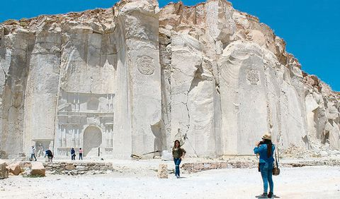
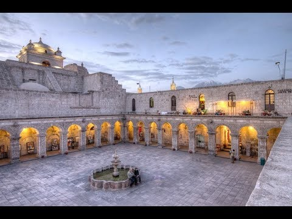

GRUPO 4
Integrantes: Daniela Mayhualla Gonzales, Aruma Huaman Mendigure, Yadhira Medina Infantes.
|  |
La excursión a las canteras de sillar, es una opción diferente y nueva; es ideal para explorar el lugar de procedencia del sillar, la piedra con la que se construyo la ciudad blanca de Arequipa, y no necesita mucho tiempo, este tour tiene una duración de 3:30 hrs aproximadamente. El nombre de la cantera es Añashuayco; y es el lugar de donde se extrae el sillar hasta el día de hoy ; sillar es la piedra icono de Arequipa; este material volcánico se utilizó en muchos edificios coloniales alrededor de Arequipa. Las canteras están ubicadas en el valle del mismo nombre a unos 2.120 msnm, en los distritos de Cerro Colorado y Uchumayo, en coche unos 35 minutos de Arequipa. |
| Claustros y pasado donde vivieron los Padres Jesuitas que llegaron a Arequipa, su ubicación cerca de la Catedral y Plaza de Armas de la ciudad. Hay que apreciar este patio que es un cuadrado perfecto con una linda Fuente de Agua en su centro y a la vez esta rodeado por cuatro pasillos los cuales están conformado por nueve arcos similares , es bueno detenerse a observar cada columna que se encuentra bajo cada arco, construida en piedra volcánica las cuales prácticamente todas tienen talladas figuras diferentes, es digno de visitar y ver cada detalle que nos muestra en sus tallados que se encuentran en todo su entorno, ademas su acceso es gratuito. |
 |
 |
El Canyon del Colca es grandioso con el Río Colca (374km de largo) serpenteándolo y muchos cultivos en terrazasen los flancos de lasmontañas, usadas desde los tiempos de los Incas! De camino desde Arequipa, pasamos por algunas casas aisladas, pequeñas aldeas y la reserva nacional de Salinas y Aguada Blanca, el hábitat natural de las vicuñas, las elegantes primas de las llamas, que producen la fibra más fina del mundo. También hay flamencos andinos, llamas, alpacas, todo ello enmarcado por grandes volcanes como el Ampato (6310 m), el Sabancaya (5076 m), el Hualca (6025 m), el Huarancante (5426 m) yel Chucura (5200 m). ¡Un gran panorama! En el punto más alto de la ruta (4900 m), los guías tienen por costumbre hacer un alto en el camino para que podamos desentumecer las piernas. |